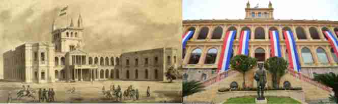

Lázaro Rojas, regaló a su ahijado, Francisco Solano López, dos hectáreas de tierra en la costa del río Paraguay, con los años y accediendo a la presidencia del Paraguay, preparó su residencia en aquel sitio. El Paraguay de entonces recibía a grandes profesionales en ingeniería y arquitectura.
En 1867 la residencia del Mariscal López se hallaba casi terminada. La contienda hizo también que los enemigos apuntasen sus cañones contra el edificio, sufriendo daños considerables que quedarían inmortalizadas en las primeras fotografías de Guerra del Siglo XIX. En 1869 se inició la ocupación de Asunción y los saqueos. Convertido desde ese momento en cuartel brasileño, hasta el fin de la ocupación en 1876. En 1890 se inició su reconstrucción, inaugurándose en 1892, convirtiéndose en sede del gobierno paraguayo.
El Palacio de López. Se halla delimitado por la Avenida El Paraguayo Independiente, y las calles Ayolas y Juan E. O'Leary.
Los primeros planos fueron elaborados por el Ing. Francisco Wissner de Morgensten de nacionalidad húngara, contratado por el presidente Don Carlos Antonio López. En el año 1857 comenzaron los trabajos bajo la dirección del Arq. Alonso Taylor de nacionalidad inglesa. Algunos Historiadores afirman que lo realizó Alejandro Ravizza (1861). En el año 1864 el edificio estaba en plena construcción cuando se inició la Guerra contra la Triple Alianza; el General Francisco Solano López tuvo que abandonar Asunción sin poder inaugurar su futura residencia, el Palacio se encontraba prácticamente terminado en 1867. En 1869 se produce la invasión Aliada en Asunción y comienzan los saqueos, el Palacio quien previamente habría sufrido un daño considerable por el disparo de una bala de cañón aliado, se convierte con la invasión en cuartel brasileño hasta el final de la ocupación en 1876. Las ornamentaciones fueron confiscadas y trasladadas al Brasil. Aún falta recuperar muchos de los bienes muebles apropiados. Tras la retirada de las tropas brasileñas, el Palacio quedó abandonado hasta el reinicio de los trabajos en 1890. El 12 de octubre de 1892 fue habilitado durante la presidencia de Juan Gualberto González.
El Palacio, fue utilizado como sede gubernamental desde 1894, fue residencia presidencial hasta la década del 40 del siglo pasado.
Se introduce en forma paulatina un nuevo patrón cultural que se caracteriza como de transición hacia el clasicismo, con la introducción de nuevos materiales como: el hierro, granito y mármol, todos importados. Se inicia el concepto de la Arquitectura de fachada”, también el concepto de: “Arquitectura monumental”.
La planta Arquitectónica en U, permite observar dos fachadas frontales: fachada sobre la Avenida el Paraguayo Independiente y Fachada litoral que mira hacia el río Paraguay.
En el año 2011 se recuperó el color original de las fachadas principales. En el interior del edificio se recuperaron las pinturas murales, los bienes muebles y el área litoral.